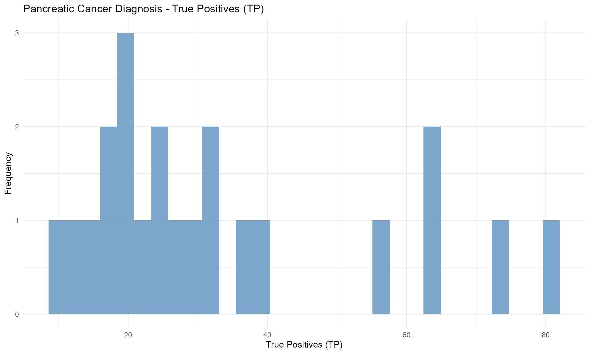
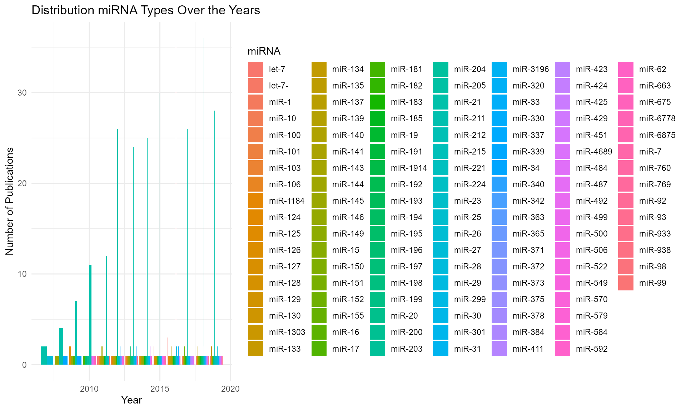

OncoDataSets: A Comprehensive Collection of Cancer Datasets
Source:vignettes/Introduction_to_OncoDataSets.Rmd
Introduction_to_OncoDataSets.Rmd
library(OncoDataSets)
library(ggplot2)
library(dplyr)
#>
#> Attaching package: 'dplyr'
#> The following objects are masked from 'package:stats':
#>
#> filter, lag
#> The following objects are masked from 'package:base':
#>
#> intersect, setdiff, setequal, unionIntroduction
The OncoDataSets package offers a comprehensive
collection of datasets focused on cancer research, covering aspects like
survival rates, genetic studies, biomarkers, and epidemiological
insights. The datasets include data on various cancer types such
as melanoma, leukemia, breast, ovarian, and lung cancer. This
package is designed to support researchers, analysts, and
bioinformaticians interested in understanding cancer epidemiology,
treatment outcomes, and genetic factors.
Dataset Suffixes
Each dataset in the OncoDataSets package comes with a
suffix to identify the type of R object it represents:
-
df: A data frame -
tbl_df: A tibble (modern version of a data frame) -
array: An array -
list: A list
Example Datasets
Below are some example datasets included in the
OncoDataSets package:
CA19PancreaticCancer_df: A data frame focused on the diagnosis of pancreatic cancer with the CA19-9 biomarker.
ColorectalMiRNAs_tbl_df: A tibble containing PubMed data of miRNAs in colorectal cancer.
CancerSmokeCity_array: An array with lung cancer data categorized by smoking status and city.
VALungCancer_list: A list containing VA lung cancer study data.
Data Visualization with OncoDataSets Data
Here are examples of how to visualize data from the
OncoDataSets package:
1. Visualization of Pancreatic Cancer Diagnosis by Biomarker
# Visualizing True Positives (TP) in Pancreatic Cancer Diagnosis
CA19PancreaticCancer_df %>%
ggplot(aes(x = TP)) +
geom_histogram(bins = 30, alpha = 0.7, fill = "steelblue") +
labs(title = "Pancreatic Cancer Diagnosis - True Positives (TP)",
x = "True Positives (TP)",
y = "Frequency") +
theme_minimal()
2. Visualization of ColorectalMiRNAs_tbl_df
ggplot(ColorectalMiRNAs_tbl_df, aes(x = Year, fill = miRNA)) +
geom_bar(position = "dodge") +
labs(title = "Distribution miRNA Types Over the Years",
x = "Year",
y = "Number of Publications") +
theme_minimal()
Conclusion
The OncoDataSets package provides essential datasets for
cancer research, offering diverse data structures that are easily
accessible for analysis. The dataset suffixes help users identify the
format of the data quickly, making the analysis process more
efficient.
For more detailed information and examples on each dataset, please refer to the full package documentation.